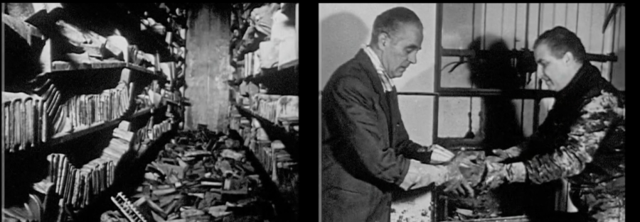

FLORENCE: DAYS OF DESTRUCTION (1966) w/ Melina Avery and Jayme Collins
FLORENCE: DAYS OF DESTRUCTION (Franco Zeffirelli, 1966, 50 min, 35mm)
Renowned Italian director Franco Zeffirelli’s only documentary, FLORENCE: DAYS OF DESTRUCTION captures the catastrophic flood that damaged his home city’s most precious cultural collections–and gave birth to the modern science of library conservation. This rare presentation of an original 35mm print will feature introductions and discussions with library conservator Melina Avery and Jayme Collins, PhD, a scholar and documentarian researching climate impacts on cultural collections.
On November 4 1966, heavy rains caused the banks of the Arno River in Florence, Italy to overflow, sending 20-foot floodwaters through the streets of a city world-renowned for its art and cultural collections. The flood left dozens dead, many thousands displaced, and millions of rare books and unique works of art damaged or destroyed.
Renowned Florentine theatre director Franco Zeffirelli was editing his first feature film, The Taming of the Shrew, when the disaster struck, and he swiftly mobilized a crew of collaborators to document the flood and its aftermath: the cars carried away by torrential currents, the thick layers of oil and mud accrued on the walls of the city’s most sacred spaces, the volunteer bucket brigades (known as “mud angels”) passing stacks of waterlogged volumes out of deluged libraries and vaults.
Broadcast on Italian television only 19 days after the flood, FLORENCE: DAYS OF DESTRUCTION mounts a moving and impassioned appeal for a worldwide relief effort, voiced by Welsh actor and Taming of the Shrew star Richard Burton. Exported around the world, the documentary helped generate $20 million for a recovery effort that is widely cited today as the birth of modern library conservation.
FLORENCE: DAYS OF DESTRUCTION has been infrequently seen in the 60 years since its release, and has not itself been preserved. For this rare presentation of an original 35mm print, Block Cinema will welcome Melina Avery, senior conservator at University of Chicago’s Joe and Rika Mansueto Library, and Dr. Jayme Collins, postdoctoral fellow at Northwestern’s Alice Kaplan Institute for the Humanities, to introduce and discuss the film, which still holds lessons for conservators and researchers invested in protecting cultural heritage from the impacts of climate change almost 60 years after its release.
Block Cinema thanks RAI TECHE for their support of this presentation of FLORENCE: DAYS OF DESTRUCTION